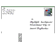

|
Maple 7 | ||
|
Moto Parabolico: Scomposizione del moto - preview Partendo dalle equazioni del: moto rettilineo uniforme e del moto rettilineo uniformemente (naturalmente) accelerato, rispettivamente sull'asse x e y si ricava il moto parabolico come somma dei due moti. |
Scomposizione del Moto | |
|
Moto Parabolico: Gittata massima - preview Partendo dalle equazioni del: moto rettilineo uniforme e del moto rettilineo uniformemente (naturalmente) accelerato, rispettivamente sull'asse x e y si ricava la gittata massima come somma dei due moti calcolata per vari angoli. |
GittataMax | |
|
Moto Parabolico: Proiettile e Bersaglio - preview Partendo dalle equazioni del: moto rettilineo uniforme e del moto rettilineo naturalmente (uniformemente) accelerato, rispettivamente sull'asse x e y si ricava il moto parabolico come somma dei due moti. Il bersaglio è animato da moto rettilineo naturalmente accelerato verso il basso. Importante: il punto di mira coincide con il segmento rettilineo che congiunge l'origine del moto parabolico all'origine del moto naturalmente accelerato del bersaglio. |
Proiettile e Bersaglio | |
|
Moto Parabolico: Proiettile e Bersaglio 2 - preview Partendo dalle equazioni del: moto rettilineo uniforme e del moto rettilineo naturalmente (uniformemente) accelerato, rispettivamente sull'asse x e y si ricava il moto parabolico come somma dei due moti. Il bersaglio è animato da moto rettilineo naturalmente accelerato verso il basso. Importante: il punto di mira coincide con il segmento rettilineo orizzontale che congiunge l'origine del moto parabolico all'origine del moto naturalmente accelerato del bersaglio. |
Proiettile e Bersaglio 2 | |
|
Moto Massa Molla - preview Si parte dall'equazione differenziale di un sistema: Massa, Molla, Attenuatore e Forza esterna di tipo sinusoidale, si risolve l'equazioni differenziale, si traccia il diagramma dell'ampiezza del moto corrispondente. |
Moto Massa Molla | |
|
Trasformazione Isoterma - preview Si parte dall'equazione differenziale di un sistema: Pistone - Cilindro - Gas, si sposta dalla posizione di equilibrio e si vede l´evoluzione del sistema. Il problema è risolto per via numerica (Runge-Kutta). |
Trasformazione Isoterma | |
|
Molla1-Massa1-Molla2-Massa2 - preview Si parte dall'equazione differenziale di un sistema a due gradi di libertà: Molla1 collegata ad una Massa1 collegata ad una Molla2 collegata ad una Massa 2. Il sistema oscilla orizzontalmente su un piano privo di attrito. Il sistema, composto da due equazioni differenziali, è risolto analiticamente |
Molla1-Massa1-Molla2-Massa2 | |
|
 g_piluso@libero.it |